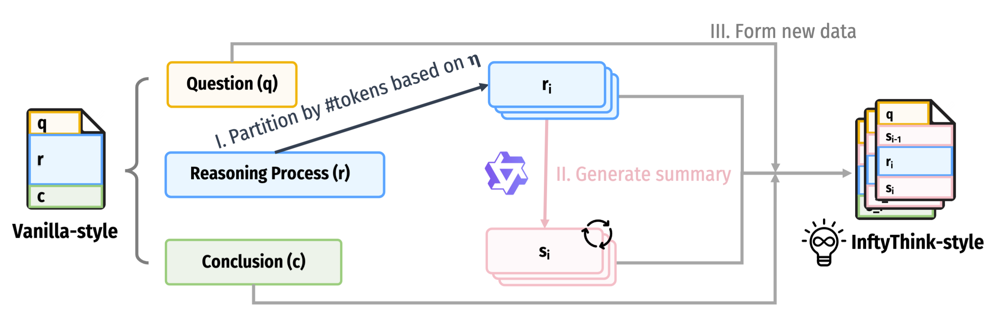
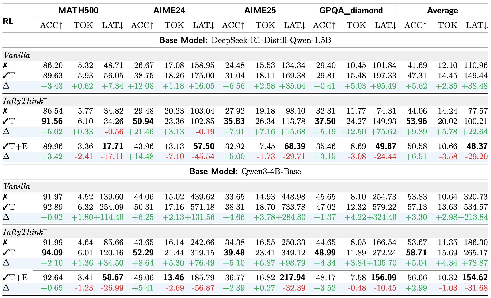

Large reasoning models achieve strong performance by scaling inference-time chain-of-thought, but this paradigm suffers from quadratic cost, context length limits, and degraded reasoning due to lost-in-the-middle effects. Iterative reasoning mitigates these issues by periodically summarizing intermediate thoughts, yet existing methods rely on supervised learning or fixed heuristics and fail to optimize when to summarize, what to preserve, and how to resume reasoning. We propose InftyThink+, an end-to-end reinforcement learning framework that optimizes the entire iterative reasoning trajectory, building on model-controlled iteration boundaries and explicit summarization. InftyThink+ adopts a two-stage training scheme with supervised cold-start followed by trajectory-level reinforcement learning, enabling the model to learn strategic summarization and continuation decisions. Experiments on DeepSeek-R1-Distill-Qwen-1.5B show that InftyThink+ improves accuracy by 21% on AIME24 and outperforms conventional long chain-of-thought reinforcement learning by a clear margin, while also generalizing better to out-of-distribution benchmarks. Moreover, InftyThink+ significantly reduces inference latency and accelerates reinforcement learning training, demonstrating improved reasoning efficiency alongside stronger performance.
Before applying RL, we perform a cold-start stage that teaches the model the basic format of InftyThink-style reasoning. Specifically, we transform existing supervised data into InftyThink format and fine-tune the model to produce multi-iteration outputs with explicit summaries.
Systematic pipeline for reconstructing vanilla-style long-context reasoning data into the InftyThink-style format. I. Original reasoning processes are partitioned into optimally sized fragments based on parameter ($\eta$), preserving semantic coherence. II. Qwen3-4B-Instruct-2507 generates concise yet comprehensive summaries for each reasoning fragment. III. The original fragments and their generated summaries are systematically recombined to create InftyThink-style training instances that teach the model to reason iteratively.
Each instance is organized to align with the InftyThink reasoning paradigm and is defined as follows: $$ (q, \textcolor{NavyBlue}{r}, \textcolor{Green}{c}) \xrightarrow{\eta,\ \gamma} \begin{cases} (q, \textcolor{NavyBlue}{r_1}, \textcolor{CarnationPink}{s_1}) & \text{for } i = 1, \\[6pt] (q, \textcolor{CarnationPink}{s_{i-1}}, \textcolor{NavyBlue}{r_i}, \textcolor{CarnationPink}{s_i}) & \text{for } 1 < i < n, \\[6pt] (q, \textcolor{CarnationPink}{s_{n-1}}, \textcolor{NavyBlue}{r_n}, \textcolor{Green}{c}) & \text{for } i = n. \end{cases} $$
At the initial iteration ($i=1$), the model is trained to generate the first reasoning segment along with its corresponding summary. For intermediate iterations ($1 \lt i \lt n$), the model learns to condition on the previously generated summary to extend the reasoning process and produce an updated summary. In the final iteration ($i=n$), the model is guided to leverage the last summary to complete the reasoning and output the final conclusion.
The cold-start stage teaches format; reinforcement learning teaches strategy. We now describe how RL is adapted to the unique structure of InftyThink reasoning, where a single problem induces a trajectory of multiple generations connected through summaries.
Given query $q$, we roll out the model iteratively: at each iteration $j$, we construct the prompt from $q$ and the previous summary $s_{j-1}$ (empty if $j = 1$), generate output $o_j$, and extract any summary for the next iteration. Rollout terminates when: (i) the model produces a conclusion instead of a summary, (ii) the model fails to produce valid InftyThink format, or (iii) the iteration count reaches $\varphi$. The $i$-th sampled trajectory for query $q$ is denoted as:
$$\mathcal{O}_i = \{o_i^1, o_i^2, \ldots, o_i^{n_i}\}, \quad n_i \leq \varphi.$$
We primarily introduce two types of rewards: a task reward, which assesses whether the model successfully solves the given problem, and an efficiency reward, which measures how efficiently the model arrives at a solution. Our reward assignment is performed at the trajectory level: for a trajectory $O_i$, all round-wise outputs $o_i^j$ share the same scalar reward.
The task reward evaluates correctness by verifying the final output against the ground truth: $$\mathcal{R}_{\text{task}}(\mathcal{O}_i) = \mathbb{I}\left[\operatorname{Verify}(o_i^{n_i}, \text{gt}) = \text{Correct}\right],$$
The efficiency reward encourages solving problems in fewer iterations when possible. We adopt a quadratic decay that penalizes additional iterations more heavily as the count grows: $$\mathcal{R}_{\text{eff}}(\mathcal{O}_i) = 1 - \left(\frac{n_i - 1}{\varphi}\right)^2.$$
We combine the two rewards multiplicatively: $$\mathcal{R}(\mathcal{O}_i) = \mathcal{R}_{\text{task}}(\mathcal{O}_i) \cdot \mathcal{R}_{\text{eff}}(\mathcal{O}_i).$$
We adopt Group Relative Policy Optimization (GRPO) as our base RL algorithm. For a given query $q$, we sample $G$ reasoning trajectories, each consisting of multiple rounds of generation. All outputs across all iterations are optimized jointly using token-level loss averaging: $$ \mathcal{J}(\theta) = \mathbb{E}_{\{\mathcal{O}_i\}_{i=1}^{G} \sim \pi_{\theta_{\text{old}}}(\cdot \mid q), \{o_i^j\}_{j=1}^{n_i} \sim \mathcal{O}_i} \left[ \frac{1}{\sum_{i=1}^G\sum_{j=1}^{n_i}|o_i^j|} \sum_{i=1}^{G} \underbrace{\sum_{j=1}^{n_i} \overbrace{\mathcal{U}(o_i^j;\theta)}^{\text{round loss}}}_{\text{trajectory loss}} \right], $$ where $|o_i^j|$ denotes the number of tokens in output $o_i^j$, and $\mathcal{U}(o; \theta)$ is the clipped surrogate objective: $$ \mathcal{U}(o;\theta) =\sum_{t=1}^{|o|} \min\left(r_\theta(o_t) \hat{A}_t,\text{clip}(r_\theta(o_t), 1-\epsilon_{\text{low}}, 1+\epsilon_{\text{high}})\hat{A}_t \right), $$ Here $r_\theta(o_t) = \pi_\theta(o_t) / \pi_{\theta_{\text{old}}}(o_t)$ is the importance sampling ratio for token $o_t$, $\epsilon_{\text{low}}$ and $\epsilon_{\text{high}}$ are clipping thresholds, and $\hat{A}_t$ is the advantage estimate for token $t$.

Our main experimental results. The results are obtained by sampling the model 32 times with a temperature of 0.7. ACC stands for average accuracy (%), TOK stands for average number of generated tokens (K), and LAT stands for average inference time in seconds. × denotes the setting with cold start only, without RL. √ T denotes the RL setting where only the task reward is used. √ T+E denotes the RL setting where both the task reward and the efficiency reward are used.
TBD